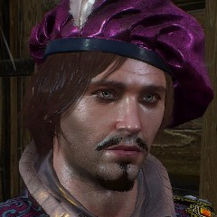

„Masz lat blisko 40, wyglądasz na blisko 30, wyobrażasz sobie, że masz nieco ponad 20, a postępujesz, jakbyś miał niecałe 10.”

Julian Alfred Pankratz wicehrabia de Lettenhove, znany jako Jaskier – poeta, trubadur, bard oraz najbliższy przyjaciel wiedźmina Geralta. Jaskier jest synem hrabiny de Lettenhove, ma kuzyna Ferranta de Lettenhove (bratanek ojca Jaskra). W czasie głównej akcji sagi ma niespełna czterdzieści lat. Urodzony w 1229 roku.
Grywał między innymi na dworach królów Niedamira, Vizimira i Venzlava, jest przyjacielem króla Ethaina z Cidaris (władca bardzo ceni sobie jego ballady).
Studiował przez cztery lata truwerstwo i poezję w Akademii Oxenfurckiej (podczas studiów zdobył opinię lenia, hulaki i idioty), a następnie został tam wykładowcą (gdy ukończył egzaminy z wynikiem celującym) i uczył studentów przez rok, po czym wyruszył w świat
Tu jeszcze grafika nie dorównywała talentowi muzycznemu i nie pozwalała oddać rzeczywistej urody

Tu było zdecydowanie lepiej, łamacz kobiecych serc jak się patrzy
Perfekcyjna grafika i nietuzinkowe kolory - ta mieszanka od razu pokazuje, że nie mamy do czynienia z byle kim
| Imię | Nazwisko | Opis |
|---|---|---|
| Geralt | Z Rivii | Wiedźmin |
| Zoltan | Chivay | Na pochybel sk....! |
| Regis | Długie, prosze mi wierzyć | Wampir wyższy |